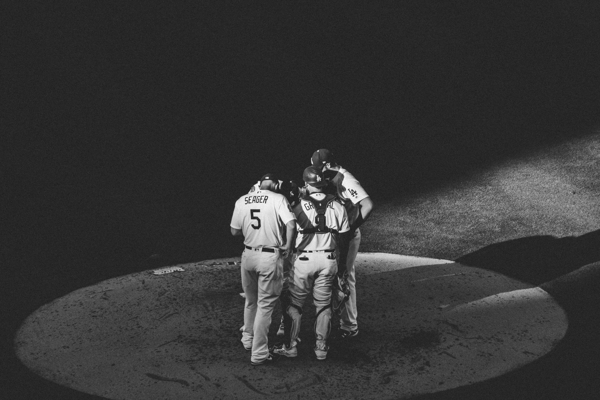

The battle for the league most valuable player
The announcement of the Most Valuable Player finalists marks the beginning of one of the most intense periods in the baseball calendar. This year, the conversation has been dominated by a mix of seasoned veterans and rising superstars who have redefined what it means to impact a game. The voters from the Baseball Writers' Association of America (BBWAA) have narrowed the field down to a group of athletes who have not only posted incredible statistics but have also carried their respective teams through grueling divisional battles.
In the American League, the debate centers on offensive consistency and high-pressure performance. Several sluggers have posted home run totals that rival the greatest seasons of the modern era, making the decision incredibly difficult for the committee. Meanwhile, in the National League, the focus has shifted toward players who provide comprehensive value, including elite defensive metrics and base-running intelligence, proving that the MVP title is no longer just about the stat sheet.
Dominant arms in the cy young race
Pitching has taken center stage this season, leading to one of the most competitive Cy Young races in recent memory. The finalists represent a diverse range of pitching styles, from high-velocity power pitchers to masters of movement and deception. As the regular season enters its final stretch, the distinction between the top contenders often comes down to a single game or a specific metric like ERA or strikeout-to-walk ratio.
The talent on the mound this year is unprecedented, with several pitchers posting numbers that we haven't seen since the golden era of pitching.
In both leagues, the competition is fierce. Some finalists have relied on sheer dominance, racking up double-digit wins and leading the league in strikeouts. Others have found success through incredible efficiency, allowing very few baserunners and keeping their teams in every single game they started. This variety ensures that the Cy Young winner will be a true testament to the evolution of modern pitching mechanics.
Rising stars and rookie of the year contenders
While the veterans fight for their legacy, the Rookie of the Year finalists represent the bright future of Major League Baseball. This group of young athletes has transitioned from the minor leagues to the big stage with startling ease. Many of these players have not only met expectations but have exceeded them, often stepping into high-pressure roles that would intimidate even seasoned veterans.
The scrutiny on these young players is immense, as their early success sets the tone for their professional careers. Watching these rookies compete for hardware provides a glimpse into the next decade of baseball excellence. Whether they are hitting home runs or shutting down opposing lineups on the mound, these finalists are proving that they belong among the elite.
Specialized awards and secondary categories
Beyond the major headlines, the BBWAA also recognizes excellence in specialized categories. The finalists for awards such as Best Relief Pitcher and Best Designated Hitter highlight the importance of role players in the modern game. These players often provide the glue that holds a championship-caliber roster together, performing their specific tasks with surgical precision.
These secondary awards are crucial for acknowledging the depth of talent across the league. A winning relief pitcher, for example, might not have the flashy statistics of a starter, but their ability to close out games is what ultimately decides wins and losses. As we look toward the official ceremony, these categories will be just as vital in telling the story of the 2026 season.
Looking ahead to the award ceremony
As the season concludes, all eyes will turn to the official awards ceremony where these finalists will be honored. The tension is building, and fans across the globe are engaging in heated debates regarding who truly deserves the hardware. For analysts and enthusiasts alike, the coming weeks will provide a fascinating study of how individual greatness translates into team success.
While we celebrate the offensive and pitching giants, it is also important to remember the defensive mastery that makes these statistics possible. For a deeper look at the players who controlled the field, check out our coverage on the New Era of Defense: 2026 Gold Glove Winners Revealed at https://dhyey.bond/blog/new-era-of-defense-2026-gold-glove-winners-revealed/. Understanding the defensive landscape provides the necessary context to appreciate the full scope of these award finalists.
Stay tuned to our blog for more breaking baseball news, player deep dives, and comprehensive analysis as we approach the final presentations of the 2026 season.
See Also
If you enjoyed this Baseball News article, check out New Era of Defense: 2026 Gold Glove Winners Revealed for more useful reading.